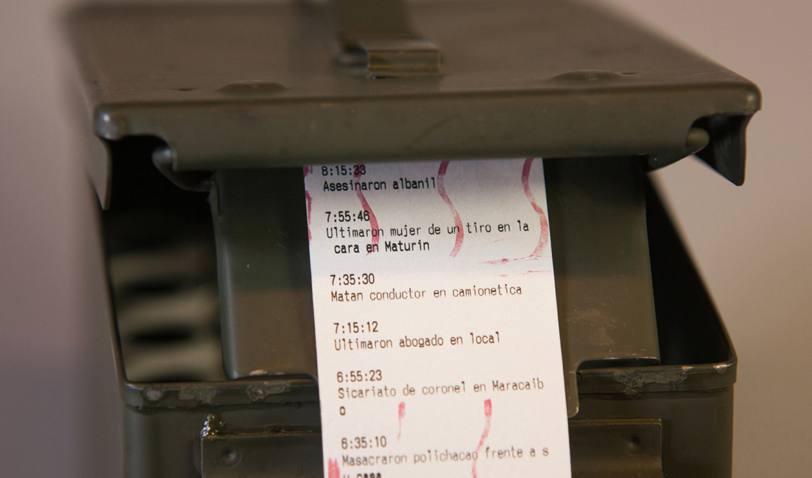
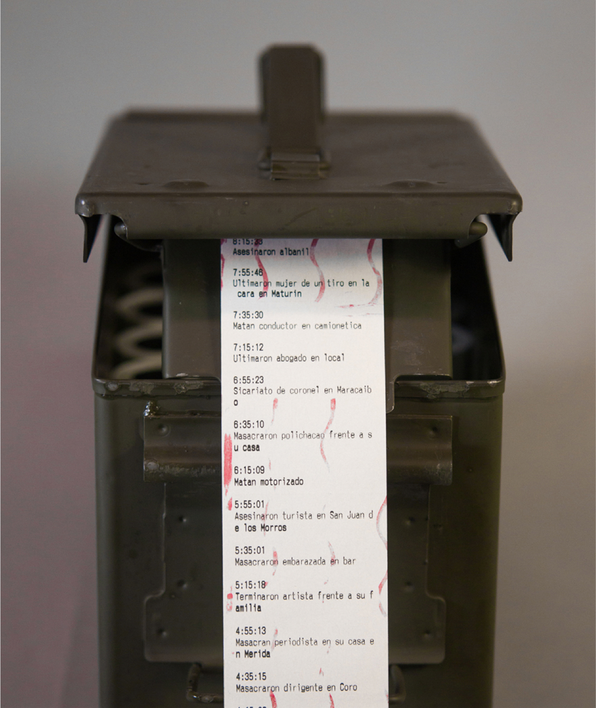
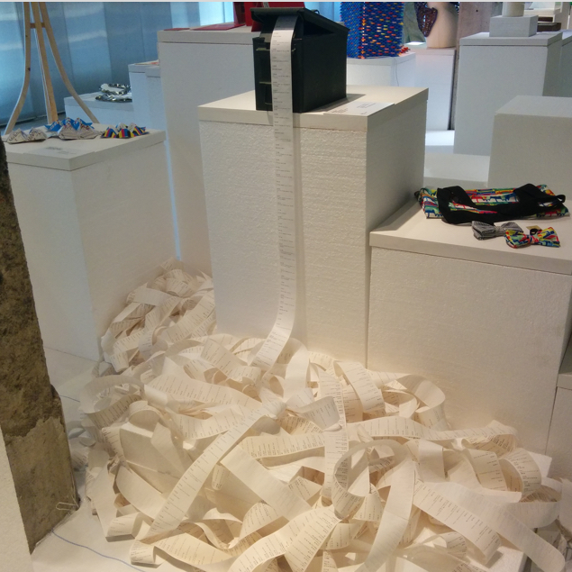
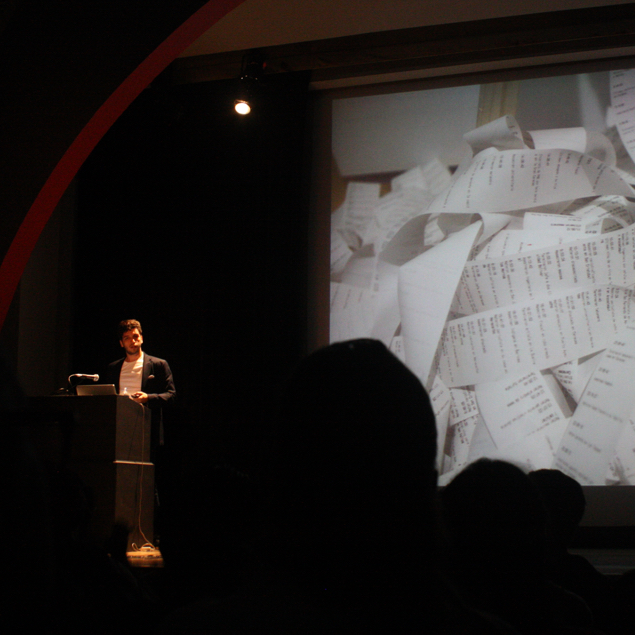

Travelling experiental infographic that visualizes the high murder rate in Venezuela.

Part infographic, part installation, the Murder Machine speculates on the details of murders commited in the streets of Venezuela.
Aproximately every 20 minutes a new murder is reported and details are auto-generated by the machine, which then documents them in the form of a receipt and a Tweet.
This “live” feed illustrates the uncertainty of life in the country
Exhibitions
- New York, USA / May - June 2014
- Madrid, Spain / November 2014 - March 2015
- Ciudad de Guatemala, Guatemala / May 2015
- Maracay, Venezuela / July 2015

The machine creates a real-time feed of hypothetical murder reports. It combines pieces taken from real Venezuelan news reports, deconstructs and reassembles them to create new headlines every twenty minutes.
Each headline describes in detail a murder that may have easily taken place in Venezuela but is still unreported.

